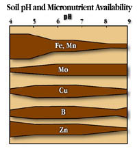

|
|
|
| Even though they are required in much smaller amounts, micronutrients are just as important as macronutrients to the survival and growth of plants. Fortunately, most Saskatchewan soils have a rich reservoir of micronutrients and fertilization is rarely required. There are, however, some coarse-textured soils in the Gray and Gray-Black zones that are slightly deficient in copper, manganese and zinc and rarely boron. In other parts of the country, such as the fruit growing regions of B.C. and Ontario, micronutrient deficiencies are common. In these areas, micronutrient fertilization is a significant management expense since micronutrient fertilizers are expensive to manufacture and apply. | ||||||||||||||||||||||||||||||||||||||
 Micronutrients in Soil The availability of micronutrients is largely determined by three variables:the abundance of parent minerals present, the chemical conditions in the soil, particularly the pH, and the rate of movement of available forms in the soil media. Many micronutrient are almost immobile in soil, or react to form complexes with organic matter and clays to form immobile compounds. This type of behavior is fortunate since the micronutrients are then protected from being lost due to leaching. | ||||||||||||||||||||||||||||||||||||||
Correcting Micronutrient Deficiency Most micronutrients are absorbed as ions through the plant root system.
In some instances, however, plants can absorb sufficient amounts through the leaves. Fruits and some vegetables can often be sprayed with micronutrient chelates. Soil applied micronutrient salts are more often used in Saskatchewan as they are cheaper and can be applied with conventional equipment. Great care must be taken when applying these nutrients so that the appropriate method is used for each micronutrient depending on its soil chemical reactions and its toxicity. Methods of application vary depending on nutrient from broadcast, seed place to seed coating.
|
||||||||||||||||||||||||||||||||||||||